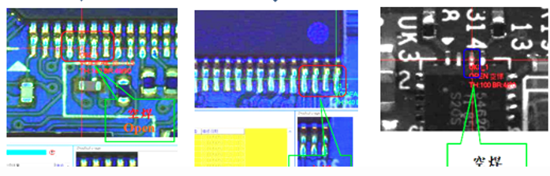

空焊（Open Solder）是指元件引腳與焊墊未產生良好金屬接合，雖然看似有焊料存在，但實際上電性不導通或接觸不良。
常見原因為錫膏印刷不足、元件浮起、回焊溫度不均、PCB翹曲或元件本身引腳污染等。
根據 IPC Class 2 標準，凡無法形成有效金屬接合、影響導通之焊點皆屬 Defect。
| 類別 | 判定說明 |
|---|---|
| ✅ Target | 焊點與元件引腳形成完整金屬接合 |
| ✔ Acceptable | 焊料略有分離，但仍具備導通功能（須經測試確認） |
| ❌ Defect | 焊點雖存在焊料，但無法導通或懸空未接觸 |
左：焊料完整接合；右：焊料未接觸焊墊，導致空焊
